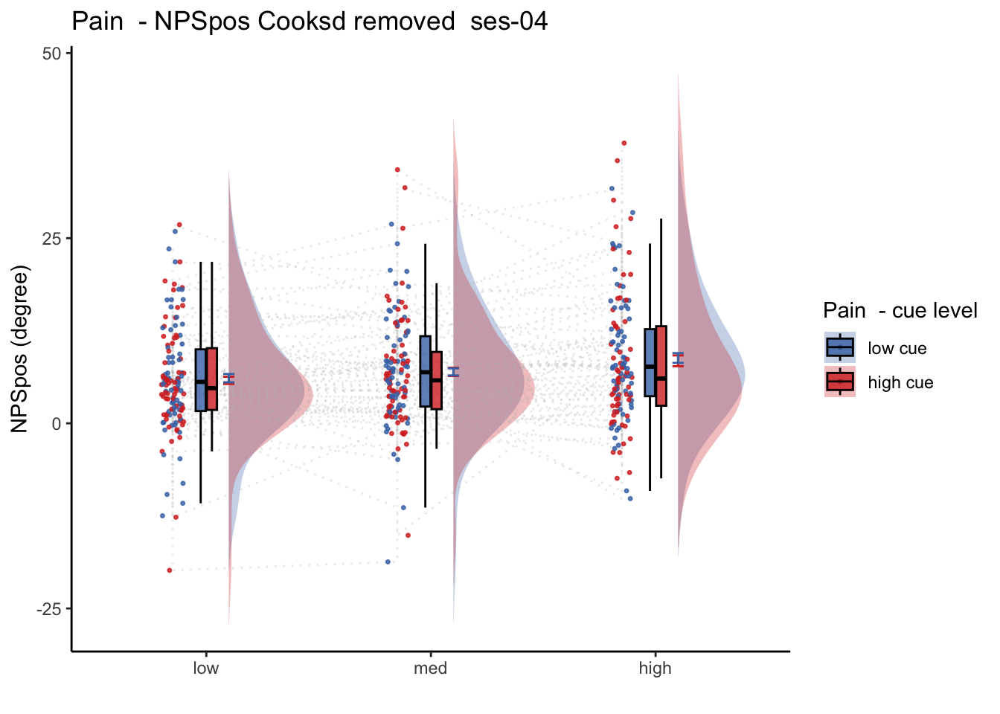
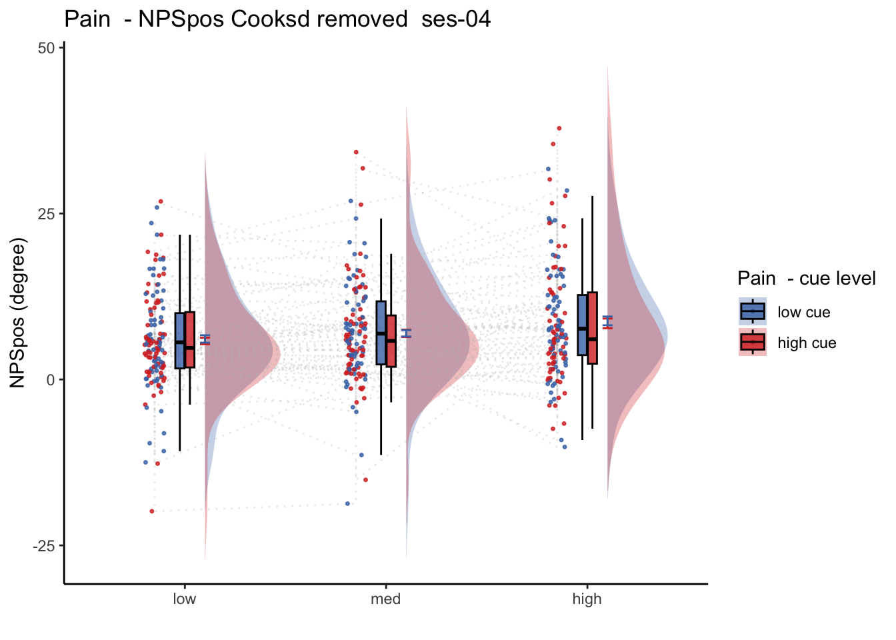
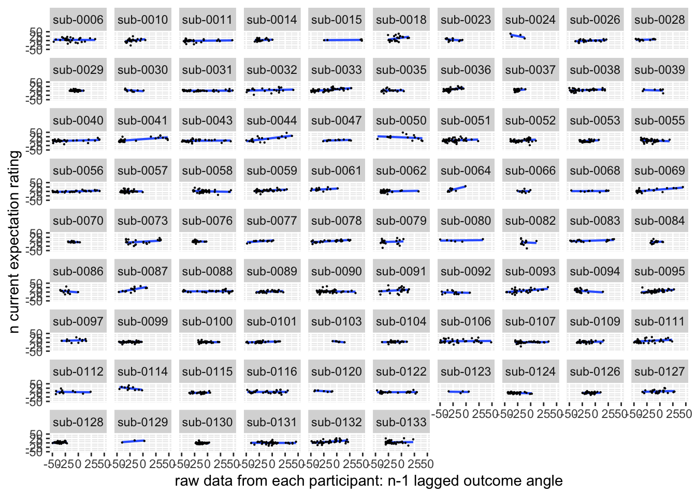
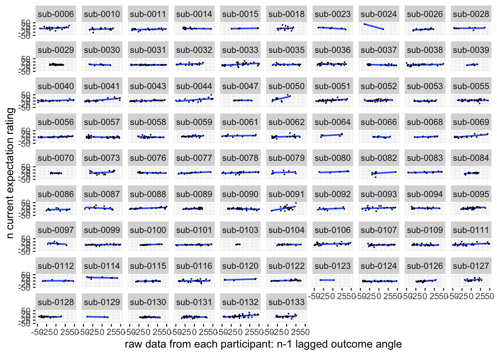

Chapter 27 [fMRI] NPSses01ses03 ~ singletrial
What is the purpose of this notebook?
- Here, I model NPS dot products as a function of cue, stimulus intensity and expectation ratings.
- One of the findings is that low cues lead to higher NPS dotproducts in the high intensity group, and that this effect becomes non-significant across sessions.
- 03/23/2023: For now, I’m grabbing participants that have complete data, i.e. 18 runs, all three sessions.
27.1 NPS ~ paintask: 2 cue x 3 stimulus_intensity
Q. Within pain task, Does stimulus intenisty level and cue level significantly predict NPS dotproducts?
27.1.1 Linear model results (NPS ~ paintask: 2 cue x 3 stimulus_intensity)
model.npscuestim <- lmer(NPSpos ~
CUE_high_gt_low*STIM_linear +CUE_high_gt_low * STIM_quadratic +
(CUE_high_gt_low+STIM|sub), data = data_screen
)## Warning: Model failed to converge with 1 negative eigenvalue: -6.1e+02sjPlot::tab_model(model.npscuestim,
title = "Multilevel-modeling: \nlmer(NPSpos ~ CUE * STIM + (CUE + STIM | sub), data = pvc)",
CSS = list(css.table = '+font-size: 12;'))| NPSpos | |||
|---|---|---|---|
| Predictors | Estimates | CI | p |
| (Intercept) | 4.02 | 3.16 – 4.88 | <0.001 |
| CUE high gt low | -0.60 | -1.05 – -0.15 | 0.010 |
| STIM linear | 1.14 | 0.57 – 1.72 | <0.001 |
| STIM quadratic | 0.13 | -0.32 – 0.58 | 0.572 |
|
CUE high gt low * STIM linear |
-0.68 | -1.71 – 0.35 | 0.196 |
|
CUE high gt low * STIM quadratic |
-0.80 | -1.70 – 0.10 | 0.082 |
| Random Effects | |||
| σ2 | 58.96 | ||
| τ00 sub | 21.50 | ||
| τ11 sub.CUE_high_gt_low | 0.65 | ||
| τ11 sub.STIMlow | 1.47 | ||
| τ11 sub.STIMmed | 0.45 | ||
| ρ01 | -1.00 | ||
| -1.00 | |||
| -1.00 | |||
| N sub | 91 | ||
| Observations | 5132 | ||
| Marginal R2 / Conditional R2 | 0.006 / NA | ||
Linear model eta-squared
## Warning: Model failed to converge with 1 negative eigenvalue: -6.1e+02| Parameter | Eta2_partial | CI | CI_low | CI_high |
|---|---|---|---|---|
| CUE_high_gt_low | 0.0313484 | 0.95 | 0.0041210 | 1 |
| STIM_linear | 0.0888723 | 0.95 | 0.0302969 | 1 |
| STIM_quadratic | 0.0000749 | 0.95 | 0.0000000 | 1 |
| CUE_high_gt_low:STIM_linear | 0.0003320 | 0.95 | 0.0000000 | 1 |
| CUE_high_gt_low:STIM_quadratic | 0.0006019 | 0.95 | 0.0000000 | 1 |
Linear model Cohen’s d: NPS stimulus_intensity d = 1.16, cue d = 0.45
## Warning: Model failed to converge with 1 negative eigenvalue: -6.1e+02| t | df | d | |
|---|---|---|---|
| CUE_high_gt_low | -2.5895817 | 207.2100 | -0.3597943 |
| STIM_linear | 3.8948423 | 155.5223 | 0.6246309 |
| STIM_quadratic | 0.5653502 | 4269.0719 | 0.0173054 |
| CUE_high_gt_low:STIM_linear | -1.2920309 | 5026.8336 | -0.0364465 |
| CUE_high_gt_low:STIM_quadratic | -1.7399770 | 5027.2880 | -0.0490802 |
27.1.2 2 cue * 3 stimulus_intensity * expectation_rating
data_screen$EXPECT <- data_screen$event02_expect_angle
model.nps3factor <- lmer(NPSpos ~
CUE_high_gt_low*STIM_linear*EXPECT +
CUE_high_gt_low*STIM_quadratic*EXPECT +
(CUE_high_gt_low |sub), data = data_screen
)
sjPlot::tab_model(model.nps3factor,
title = "Multilevel-modeling: \nlmer(NPSpos ~ CUE * STIM * EXPECTATION + (CUE + STIM + EXPECT | sub), data = pvc)",
CSS = list(css.table = '+font-size: 12;'))| NPSpos | |||
|---|---|---|---|
| Predictors | Estimates | CI | p |
| (Intercept) | 0.84 | -0.07 – 1.75 | 0.071 |
| CUE high gt low | -2.06 | -2.96 – -1.17 | <0.001 |
| STIM linear | -0.60 | -1.54 – 0.33 | 0.208 |
| EXPECT | 0.07 | 0.06 – 0.07 | <0.001 |
| STIM quadratic | 0.73 | -0.10 – 1.56 | 0.084 |
|
CUE high gt low * STIM linear |
-1.52 | -3.39 – 0.35 | 0.112 |
| CUE high gt low * EXPECT | -0.02 | -0.03 – -0.00 | 0.017 |
| STIM linear * EXPECT | 0.04 | 0.02 – 0.05 | <0.001 |
|
CUE high gt low * STIM quadratic |
-1.14 | -2.80 – 0.53 | 0.180 |
| EXPECT * STIM quadratic | -0.01 | -0.03 – 0.00 | 0.101 |
|
(CUE high gt low * STIM linear) * EXPECT |
-0.01 | -0.04 – 0.02 | 0.530 |
|
(CUE high gt low EXPECT) STIM quadratic |
0.01 | -0.02 – 0.03 | 0.627 |
| Random Effects | |||
| σ2 | 55.66 | ||
| τ00 sub | 14.44 | ||
| τ11 sub.CUE_high_gt_low | 2.75 | ||
| ρ01 sub | -0.66 | ||
| ICC | 0.21 | ||
| N sub | 91 | ||
| Observations | 4948 | ||
| Marginal R2 / Conditional R2 | 0.070 / 0.268 | ||
eta squared
| Parameter | Eta2_partial | CI | CI_low | CI_high |
|---|---|---|---|---|
| CUE_high_gt_low | 0.0763280 | 0.95 | 0.0315791 | 1 |
| STIM_linear | 0.0003322 | 0.95 | 0.0000000 | 1 |
| EXPECT | 0.0627455 | 0.95 | 0.0513958 | 1 |
| STIM_quadratic | 0.0006244 | 0.95 | 0.0000000 | 1 |
| CUE_high_gt_low:STIM_linear | 0.0005275 | 0.95 | 0.0000000 | 1 |
| CUE_high_gt_low:EXPECT | 0.0058467 | 0.95 | 0.0005392 | 1 |
| STIM_linear:EXPECT | 0.0046408 | 0.95 | 0.0019729 | 1 |
| CUE_high_gt_low:STIM_quadratic | 0.0003756 | 0.95 | 0.0000000 | 1 |
| EXPECT:STIM_quadratic | 0.0005628 | 0.95 | 0.0000000 | 1 |
| CUE_high_gt_low:STIM_linear:EXPECT | 0.0000825 | 0.95 | 0.0000000 | 1 |
| CUE_high_gt_low:EXPECT:STIM_quadratic | 0.0000495 | 0.95 | 0.0000000 | 1 |
Cohen’s d
| t | df | d | |
|---|---|---|---|
| CUE_high_gt_low | -4.5261619 | 247.9098 | -0.5749276 |
| STIM_linear | -1.2603822 | 4780.9479 | -0.0364565 |
| EXPECT | 16.6679460 | 4149.9121 | 0.5174789 |
| STIM_quadratic | 1.7281591 | 4779.7399 | 0.0499933 |
| CUE_high_gt_low:STIM_linear | -1.5898455 | 4789.2961 | -0.0459461 |
| CUE_high_gt_low:EXPECT | -2.3777784 | 961.3625 | -0.1533761 |
| STIM_linear:EXPECT | 4.7210572 | 4780.3786 | 0.1365646 |
| CUE_high_gt_low:STIM_quadratic | -1.3394853 | 4775.3494 | -0.0387673 |
| EXPECT:STIM_quadratic | -1.6405772 | 4779.7124 | -0.0474598 |
| CUE_high_gt_low:STIM_linear:EXPECT | -0.6280425 | 4781.4227 | -0.0181652 |
| CUE_high_gt_low:EXPECT:STIM_quadratic | 0.4866098 | 4779.6409 | 0.0140771 |
27.2 NPS_ses01 ~ SES * CUE * STIM
Q. Is the cue effect on NPS different across sessions?
Quick answer: Yes, the cue effect in session 1 (for high intensity group) is significantly different; whereas this different becomes non significant in session 4. To unpack, a participant was informed to experience a low stimulus intensity, when in fact they were delivered a high intensity stimulus. This violation presumably leads to a higher NPS response, given that they were delivered a much painful stimulus than expected. The fact that the cue effect is almost non significant during the last session indicates that the cue effects are not just an anchoring effect.
 
27.4 OUTCOME ~ NPS
Q. Do higher NPS values indicate higher outcome ratings? (Pain task only)
Yes, Higher NPS values are associated with higher outcome ratings. The linear relationship between NPS value and outcome ratings are stronger for conditions where cue level is congruent with stimulus intensity levels. In other words, NPS-outcome rating relationship is stringent in the low cue-low intensity group, as is the case for high cue-ghigh intensity group.
27.4.3 demeaned outcome rating * cue
## `geom_smooth()` using formula = 'y ~ x'## Warning: Removed 45 rows containing non-finite values (`stat_smooth()`).## `geom_smooth()` using formula = 'y ~ x'## Warning: Removed 45 rows containing non-finite values (`stat_smooth()`).## Warning: Removed 45 rows containing missing values (`geom_point()`).27.4.5 Is this statistically significant?
# organize variable names
# NPS_demean vs. NPSpos
model.npsoutcome <- lmer(OUTCOME_demean ~ CUE_high_gt_low*STIM_linear*NPSpos + CUE_high_gt_low*STIM_quadratic*NPSpos + (CUE_high_gt_low*STIM*NPSpos|sub), data = demean_dropna)
sjPlot::tab_model(model.npsoutcome,
title = "Multilevel-modeling: \nlmer(OUTCOME_demean ~ CUE * STIM * NPSpos + (CUE * STIM *NPSpos | sub), data = pvc)",
CSS = list(css.table = '+font-size: 12;'))| OUTCOME_demean | |||
|---|---|---|---|
| Predictors | Estimates | CI | p |
| (Intercept) | -4.09 | -5.55 – -2.62 | <0.001 |
| CUE high gt low | 8.58 | 6.51 – 10.66 | <0.001 |
| STIM linear | 22.06 | 19.50 – 24.63 | <0.001 |
| NPSpos | 0.93 | 0.70 – 1.17 | <0.001 |
| STIM quadratic | -0.59 | -2.43 – 1.26 | 0.533 |
|
CUE high gt low * STIM linear |
2.76 | -1.46 – 6.97 | 0.199 |
| CUE high gt low * NPSpos | 0.05 | -0.17 – 0.26 | 0.676 |
| STIM linear * NPSpos | 0.24 | -0.02 – 0.50 | 0.073 |
|
CUE high gt low * STIM quadratic |
-4.76 | -8.43 – -1.09 | 0.011 |
| NPSpos * STIM quadratic | 0.01 | -0.21 – 0.23 | 0.932 |
|
(CUE high gt low * STIM linear) * NPSpos |
-0.25 | -0.77 – 0.26 | 0.333 |
|
(CUE high gt low NPSpos) STIM quadratic |
-0.14 | -0.57 – 0.29 | 0.530 |
| Random Effects | |||
| σ2 | 765.22 | ||
| τ00 sub | 55.66 | ||
| τ11 sub.CUE_high_gt_low | 36.16 | ||
| τ11 sub.STIMlow | 46.24 | ||
| τ11 sub.STIMmed | 22.42 | ||
| τ11 sub.NPSpos | 0.89 | ||
| τ11 sub.CUE_high_gt_low:STIMlow | 21.05 | ||
| τ11 sub.CUE_high_gt_low:STIMmed | 10.13 | ||
| τ11 sub.CUE_high_gt_low:NPSpos | 0.19 | ||
| τ11 sub.STIMlow:NPSpos | 0.14 | ||
| τ11 sub.STIMmed:NPSpos | 0.09 | ||
| τ11 sub.CUE_high_gt_low:STIMlow:NPSpos | 0.56 | ||
| τ11 sub.CUE_high_gt_low:STIMmed:NPSpos | 0.42 | ||
| ρ01 | -0.75 | ||
| -0.71 | |||
| -0.77 | |||
| -0.58 | |||
| 0.85 | |||
| -0.02 | |||
| 0.09 | |||
| -0.50 | |||
| -0.11 | |||
| 0.07 | |||
| 0.26 | |||
| N sub | 84 | ||
| Observations | 5007 | ||
| Marginal R2 / Conditional R2 | 0.186 / NA | ||
27.5 NPS ~ expectation_rating
Q. What is the relationship betweeen expectation ratings & NPS? (Pain task only)
Do we see a linear effect between expectation rating and NPS dot products? Also, does this effect differ as a function of cue and stimulus intensity ratings, as is the case for behavioral ratings?
Quick answer: Yes, expectation ratings predict NPS dotproducts; Also, there tends to be a different relationship depending on cues, just by looking at the figures, although this needs to be tested statistically.
27.5.4 NPS ~ demeaned_expect * cue * stim

cue_high = demean_dropna[demean_dropna$cue_name == "high", ]
fig.height = 50
fig.width = 10
ggplot(aes(x=EXPECT_demean, y=NPSpos), data=cue_high) +
geom_smooth(method='lm', se=F, size=0.75) +
geom_point(size=0.1) +
# geom_abline(intercept = 0, slope = 1, color="green",
# linetype="dashed", size=0.5) +
facet_wrap(~sub) +
theme(legend.position='none') +
xlim(-50,50) + ylim(-50,50) +
xlab("raw data from each participant: n-1 lagged outcome angle") +
ylab("n current expectation rating") ## `geom_smooth()` using formula = 'y ~ x'## Warning: Removed 287 rows containing non-finite values (`stat_smooth()`).## Warning: Removed 287 rows containing missing values (`geom_point()`).cue_low = demean_dropna[demean_dropna$cue_name == "low", ]
fig.height = 50
fig.width = 10
ggplot(aes(x=EXPECT_demean, y=NPSpos), data=cue_low) +
geom_smooth(method='lm', se=F, size=0.75) +
geom_point(size=0.1) +
# geom_abline(intercept = 0, slope = 1, color="green",
# linetype="dashed", size=0.5) +
facet_wrap(~sub) +
theme(legend.position='none') +
xlim(-50,50) + ylim(-50,50) +
xlab("raw data from each participant: n-1 lagged outcome angle") +
ylab("n current expectation rating") ## `geom_smooth()` using formula = 'y ~ x'## Warning: Removed 154 rows containing non-finite values (`stat_smooth()`).## Warning: Removed 154 rows containing missing values (`geom_point()`).
27.5.4.1 facetwrap
# 74, 85, 118
fig.height = 50
fig.width = 10
ggplot(aes(x=EXPECT_demean, y=NPSpos), data=demean_high) +
geom_smooth(method='lm', se=F, size=0.75) +
geom_point(size=0.1) +
# geom_abline(intercept = 0, slope = 1, color="green",
# linetype="dashed", size=0.5) +
facet_wrap(~sub) +
theme(legend.position='none') +
xlim(-50,50) + ylim(-50,50) +
xlab("raw data from each participant: n-1 lagged outcome angle") +
ylab("n current expectation rating") ## `geom_smooth()` using formula = 'y ~ x'## Warning: Removed 142 rows containing non-finite values (`stat_smooth()`).## Warning: Removed 142 rows containing missing values (`geom_point()`).
# 74, 85, 118, 117
fig.height = 50
fig.width = 10
ggplot(aes(x=EXPECT_demean, y=NPSpos), data=demean_low) +
geom_smooth(method='lm', se=F, size=0.75) +
geom_point(size=0.1) +
# geom_abline(intercept = 0, slope = 1, color="green",
# linetype="dashed", size=0.5) +
facet_wrap(~sub) +
theme(legend.position='none') +
xlim(-50,50) + ylim(-50,50) +
xlab("raw data from each participant: n-1 lagged outcome angle") +
ylab("n current expectation rating") ## `geom_smooth()` using formula = 'y ~ x'## Warning: Removed 142 rows containing non-finite values (`stat_smooth()`).## Warning: Removed 142 rows containing missing values (`geom_point()`).# 74, 85, 118, 117
fig.height = 50
fig.width = 10
ggplot(aes(x=EXPECT_demean, y=NPSpos), data=demean_med) +
geom_smooth(method='lm', se=F, size=0.75) +
geom_point(size=0.1) +
# geom_abline(intercept = 0, slope = 1, color="green",
# linetype="dashed", size=0.5) +
facet_wrap(~sub) +
theme(legend.position='none') +
xlim(-50,50) + ylim(-50,50) +
xlab("raw data from each participant: n-1 lagged outcome angle") +
ylab("n current expectation rating") ## `geom_smooth()` using formula = 'y ~ x'## Warning: Removed 157 rows containing non-finite values (`stat_smooth()`).## Warning: Removed 157 rows containing missing values (`geom_point()`).#### subjectwise plot v2
ggplot(demean_med, aes(y = NPSpos,
x = EXPECT_demean,
colour = cuetype, shape = sub), size = .3, color = 'gray') +
geom_point(size = .1) +
geom_smooth(method = 'lm', formula= y ~ x, se = FALSE, size = .3) +
scale_color_manual(values = c("cuetype-high" = "#941100", "cuetype-low" = "#BBBBBB"), ) +
theme_classic()## Warning: The shape palette can deal with a maximum of 6 discrete values because
## more than 6 becomes difficult to discriminate; you have 86. Consider
## specifying shapes manually if you must have them.## Warning: Removed 1512 rows containing missing values (`geom_point()`).27.5.5 ACCURATE Is this statistically significant?
27.5.5.1 ACCURATE: NPS ~ demean + CMC
model.npsexpectdemean <- lmer(NPSpos ~
CUE_high_gt_low*STIM_linear*EXPECT_demean +
CUE_high_gt_low*STIM_quadratic*EXPECT_demean +
EXPECT_cmc +
(CUE_high_gt_low |sub), data = demean_dropna
)
# CUE_high_gt_low+STIM+EXPECT_demean
sjPlot::tab_model(model.npsexpectdemean,
title = "Multilevel-modeling: \nlmer(NPSpos ~ CUE * STIM * EXPECT_demean + (1| sub), data = pvc)",
CSS = list(css.table = '+font-size: 12;'))| NPSpos | |||
|---|---|---|---|
| Predictors | Estimates | CI | p |
| (Intercept) | 3.99 | 3.18 – 4.80 | <0.001 |
| CUE high gt low | -2.93 | -3.56 – -2.31 | <0.001 |
| STIM linear | 1.21 | 0.60 – 1.82 | <0.001 |
| EXPECT demean | 0.07 | 0.06 – 0.08 | <0.001 |
| STIM quadratic | 0.34 | -0.21 – 0.89 | 0.223 |
| EXPECT cmc | 0.06 | 0.02 – 0.09 | 0.004 |
|
CUE high gt low * STIM linear |
-2.34 | -3.56 – -1.12 | <0.001 |
|
CUE high gt low * EXPECT demean |
-0.03 | -0.04 – -0.01 | 0.002 |
|
STIM linear * EXPECT demean |
0.04 | 0.02 – 0.06 | <0.001 |
|
CUE high gt low * STIM quadratic |
-0.68 | -1.78 – 0.41 | 0.222 |
|
EXPECT demean * STIM quadratic |
-0.02 | -0.04 – -0.00 | 0.028 |
|
(CUE high gt low * STIM linear) * EXPECT demean |
-0.01 | -0.05 – 0.03 | 0.710 |
|
(CUE high gt low * EXPECT demean) * STIM quadratic |
-0.01 | -0.05 – 0.02 | 0.434 |
| Random Effects | |||
| σ2 | 55.44 | ||
| τ00 sub | 12.93 | ||
| τ11 sub.CUE_high_gt_low | 2.61 | ||
| ρ01 sub | -0.68 | ||
| ICC | 0.20 | ||
| N sub | 86 | ||
| Observations | 4883 | ||
| Marginal R2 / Conditional R2 | 0.064 / 0.248 | ||
27.5.5.2 simple slopes when STIM == ‘high’, EXPECT_demean slope difference between high vs. low cue
interactions::sim_slopes(model=model.npsexpectdemean, pred=EXPECT_demean, modx=CUE_high_gt_low, mod2 =STIM_linear, mod2.values = 0.5, centered = 'all', data = demean_dropna)## ███████████████████ While STIM_linear (2nd moderator) = 0.50 ███████████████████
##
## JOHNSON-NEYMAN INTERVAL
##
## When CUE_high_gt_low is OUTSIDE the interval [1.57, 22.88], the slope of
## EXPECT_demean is p < .05.
##
## Note: The range of observed values of CUE_high_gt_low is [-0.50, 0.50]
##
## SIMPLE SLOPES ANALYSIS
##
## Slope of EXPECT_demean when CUE_high_gt_low = -0.50 (-0.5):
##
## Est. S.E. t val. p
## ------ ------ -------- ------
## 0.11 0.01 10.64 0.00
##
## Slope of EXPECT_demean when CUE_high_gt_low = 0.50 (0.5):
##
## Est. S.E. t val. p
## ------ ------ -------- ------
## 0.07 0.01 8.31 0.0027.5.5.3 emtrneds
emt.t <- emtrends(model.npsexpectdemean, ~ STIM_linear | CUE_high_gt_low,
var = "EXPECT_demean",
# nuisance = c("EXPECT_cmc"),
at = list(STIM_linear=c(0.5, 0, -0.5)),
lmer.df = "asymp")
pairs(emt.t, simple = "each")## $`simple contrasts for STIM_linear`
## CUE_high_gt_low = -0.5:
## contrast estimate SE df z.ratio p.value
## STIM_linear0.5 - STIM_linear0 0.0237 0.00746 Inf 3.181 0.0042
## STIM_linear0.5 - (STIM_linear-0.5) 0.0474 0.01491 Inf 3.181 0.0042
## STIM_linear0 - (STIM_linear-0.5) 0.0237 0.00746 Inf 3.181 0.0042
##
## CUE_high_gt_low = 0.5:
## contrast estimate SE df z.ratio p.value
## STIM_linear0.5 - STIM_linear0 0.0199 0.00692 Inf 2.881 0.0110
## STIM_linear0.5 - (STIM_linear-0.5) 0.0399 0.01384 Inf 2.881 0.0110
## STIM_linear0 - (STIM_linear-0.5) 0.0199 0.00692 Inf 2.881 0.0110
##
## Results are averaged over the levels of: STIM_quadratic
## Degrees-of-freedom method: asymptotic
## P value adjustment: tukey method for comparing a family of 3 estimates
##
## $`simple contrasts for CUE_high_gt_low`
## STIM_linear = -0.5:
## contrast estimate SE df z.ratio
## (CUE_high_gt_low-0.5) - CUE_high_gt_low0.5 0.0251 0.01369 Inf 1.837
## p.value
## 0.0662
##
## STIM_linear = 0.0:
## contrast estimate SE df z.ratio
## (CUE_high_gt_low-0.5) - CUE_high_gt_low0.5 0.0289 0.00927 Inf 3.121
## p.value
## 0.0018
##
## STIM_linear = 0.5:
## contrast estimate SE df z.ratio
## (CUE_high_gt_low-0.5) - CUE_high_gt_low0.5 0.0327 0.01383 Inf 2.364
## p.value
## 0.0181
##
## Results are averaged over the levels of: STIM_quadratic
## Degrees-of-freedom method: asymptotic# contrast(emt.t, "revpairwise")27.5.5.4 resourcees on simple slopes in lmer
# https://stats.stackexchange.com/questions/365466/significance-of-slope-different-than-zero-in-triple-interaction-with-factors
# https://stats.stackexchange.com/questions/586748/calculating-trends-with-emtrends-for-three-way-interaction-model-results-in-sa
# emtrends(model.npsexpectdemean, var = 'EXPECT_demean', lmer.df = "asymptotic")
27.5.5.5 ACCURATE: NPS ~ demean + CMC
model.npsexpectdemean <- lmer(NPSpos ~
CUE_high_gt_low*EXPECT_demean + EXPECT_cmc + factor(ses) +
(1|sub), data = demean_dropna
)
# CUE_high_gt_low+STIM+EXPECT_demean
sjPlot::tab_model(model.npsexpectdemean,
title = "Multilevel-modeling: \nlmer(NPSpos ~ CUE * STIM * EXPECT_demean + (1| sub), data = pvc)",
CSS = list(css.table = '+font-size: 12;'))| NPSpos | |||
|---|---|---|---|
| Predictors | Estimates | CI | p |
| (Intercept) | 6.24 | 5.38 – 7.10 | <0.001 |
| CUE high gt low | -2.18 | -2.69 – -1.67 | <0.001 |
| EXPECT demean | 0.05 | 0.04 – 0.06 | <0.001 |
| EXPECT cmc | 0.05 | 0.01 – 0.09 | 0.017 |
| factor(ses)ses-03 | -3.33 | -3.89 – -2.76 | <0.001 |
|
CUE high gt low * EXPECT demean |
-0.03 | -0.04 – -0.01 | 0.003 |
| Random Effects | |||
| σ2 | 55.11 | ||
| τ00 sub | 11.16 | ||
| ICC | 0.17 | ||
| N sub | 86 | ||
| Observations | 4883 | ||
| Marginal R2 / Conditional R2 | 0.079 / 0.234 | ||